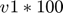
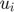
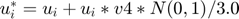
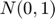

focimt
Perform seismic moment tensor inversion in time domain.
Contents
Syntax
focimt(Input) focimt(Input,'PropertyName',PropertyValue, ...) [Solution, Input] = focimt(...)
Description
Use focimt to perform the seismic moment tensor inversion using fociMT application via MATLAB interface. The function wraps the input and output of data for fociMT executable and provide a convenient interface between MATLAB and fociMT application.
focimt(Input) reads input data and performs moment tensor inversion using fociMT software and default processing parameters. The input array can be either a path to the formatted ASCII input file or Input cell array.
focimt(Input,'PropertyName',PropertyValue, ...) allows to specify additional parameters in a form of PropertyName-PropertyValue pairs.
[Solution, Input] = focimt(...) returns final moment tensor solutions in a form of cell array Solution as well as input cell array Input.
Additional information
For an up-to-date information on software package, see the following website: http://www.induced.pl/focimt.
Parameters
Jacknife - Single station rejection test
'off' (default) | 'on'
Performs station rejection test. Firstly, the seismic moment tensor inversion is performed using all available stations. Then, the inversion is performed n times, where n is the number of stations, and each time different station is removed before inversion is performed. See Examples section for details.
Hemisphere - Hemisphere projection
'lower' (default) | 'upper'
Allows to specify whether the obtained fault plane solution is projected onto 'lower' or 'upper' part of the hemisphere in graphical representation of the seismic moment tensor solution (beach ball). Seismological convention, and the default value of this parameter is lower hemisphere projection.
Norm - Optimization norm
'L2' (default) | 'L1'
Defines norm of the cost function as well as the algorithm that is used to perform the seismic moment tensor inversion with fociMT software. By default the seismic moment tensor is performed using L2 norm (faster). However, if input data contains large amplitude misreadings, the user can choose L1 norm which is less prone to larger errors.
Projection - Projection type
'schmidt' (default) | 'wullf'
Defines projection type for graphical representation of the seismic moment tensor inversion (beach ball). The user may use 'schmidt' (equal area) or 'wullf' (equal angle) projection to plot the beach ball.
BeachBallSize - Beach ball figure size
500 (default) | scalar value
Defines size of graphical representation of seismic moment tensor solution exported by fociMT software in arbitrary units. For raster formats the value corresponds to pixels.
BeachBallFormat - Beach ball figure file format
'NONE' (default) | 'PNG' | 'SVG' | 'PDF' | 'PS'
Defines format of graphical representation of the seismic moment tensor file (beach ball). By default, no output file is exported. Multiple file formats can be specified by appending the comma or any other delimiter, e.g. 'PNG,SVG,PS' parameter value will export beach ball in three different file formats at once.
IgnoreStation - Ignored station(s) list
{} (default) | cell array | string
Use this parameter to specify a list of stations that should be rejected from seismic moment tensor inversion. Single station can be specified as string. If multiple stations are meant to be rejected they must be provided as cell array of strings.
Verbose - Display additional output in console window
'off' (default) | 'on'
Turns on/off the display of additional processing information in console window.
VelocityModel - Input 1D velocity model
[] (default) | n-by-2 matrix
Allows to provide a 1D velocity model as n-by-2 matrix where first column corresponds to tops of the lateyers (km) and second column reflects layers' widths (km/s). When this parameter is specified it is assumed the input file is provided in 1D velocity model format.
MinimumPhases - Minimum number of phases to calculate moment tensor solution
8 (default) | scalar value > 0
Specifies minimum number of phases to perform the moment tensor inversion.
Bootstrap - Perform MT inversions of resampled input phase datasets
1-by-2 to 1-by-4 vector
This option enables resampling of input phase dataset using variety of resampling procedures described below. For each resampled dataset the seismic moment tensor inversion is performed in the same way as for the original input dataset. The available resampling procedures can be combined altogether enabling uncertainty assessment.
The parameter BootStrap is followed by 1-by-2 to 1-by-4 vector V defining the number of resamplings performed and additional parameters related to different resampling procedures.
Three resampling procedures are available:
- Polarity resampling
- Stations rejection resampling
- Amplitude resamping
Enabling/disabling of either of the available resampling procedures is performed by modification of the input V vector. The input V vector is in general of the form: V=[n v1 v2 v3].
Polarity resampling
For polarity resampling the polarities of input phase data are randomly toggled with probability equal to  percent. For example, if input vector for Bootstrap parameter is specified as V=[100 0.1] this mean that we perform moment tensor inversions on 200 randomly resampled input datasets assuming that on average 10% of stations will have reverted polarities.
Station rejection resampling
For station rejection resampling certain amount of stations is randomly removed from each input dataset. This is somehow similar to the Jacknife test, however it case of rejection resampling more than one station can be removed from the input dataset and whether or not the station is removed depends on the auxiliary parameter v2. The parameter v2 determines what is the fraction of input phase data that should be removed during resampling. For example, if the input vector for Bootstrap parameter is specified as V=[200 0 0.05] (note 0 value that 'switches off' the Polarity resampling described above) we perform moment tensor inversions on 200 randomly resampled input datasets assuming that on average 5% of stations is removed from each resampled input dataset.
Amplitude resampling%
In amplitude resampling procedure, the random noise is introduced to input amplitude data. The amount of noise is specified by 4th parameter of the input vector V, v4. In this procedure each input amplitude  is modified according to , where  is a random number drawn from Gaussian distribution with mean 0 and standard deviation of 1. Therefore, to introduce the noise to input amplitude data that reaches a factor of 2 in 95% of cases and generate 300 resampled moment tensors, the input vector should stand: V=[300 0 0 1].
Combining resampling procedures
The resampling procedures may be combined altogether. For example assuming the parameter value for Bootstrap option is V=[100 0.05 0.01 1.0] we perform (in addition to regular moment tensor inversion) additional moment tensor inversions on 100 resampled input datasets, where we assume that on average 5% of input phase data has reverted polarities, 1% of stations may be rejected and the input phase data are randomly polluted with the noise reaching a factor of 2 of originally measured amplitudes.
CorrectStation - Allows to provide a constant multiplier factor to input amplitudes
cell([]) (default) | {'stationname1',factor1,'stationname2',factor2,...}
Allows to provide a constant multiplication factor to input seismic moments for a specific station or stations. This can be useful when one want to correct a specific station for bad polarity or bad gain value. Also, this parameter is useful while performing the hybrid moment tensor inversion with corrected gains.
PlotAxes - Axes plotting on the beach ball.
'off' (default) | 'on'
Toggle on/off plotting cardinal P/T axes on graphical representation of the seismic moment tensor.
PlotCross - Center cross plotting on the beach ball.
'off' (default) | 'on'
Toggle on/off plotting of the center cross on graphical representation of the seismic moment tensor.
PlotDC - Nodal lines plotting on the beach ball.
'off' (default) | 'on'
Toggle on/off plotting of the nodal lines on graphical representation of the seismic moment tensor.
PlotStations - Stations plotting on the beach ball.
'off' (default) | 'on'
Toggle on/off plotting stations on graphical representation of the seismic moment tensor.
ProjectDir - Specify output project directory
'' (default) | 'directoryname' (valid directory name)
Use ProjectDir to specify output directory for text files, graphical representations of moment tensor inversion and other files. Also, the input data table (if exists) is copied to this directory after the inversion.
Solutions - Specify which moment tensors to calculate
'FTD' (default) | string combination of 'F', 'T' or 'D' characters
Use Solutions to specify which type of seismic moment tensor to calculate. By default all three types of moment tensors are calculated: uncostrained full ('F'), deviatoric ('T') and double-couple ('D') constrained moment tensor. However, it is possible to limit the moment tensor inversion to specific type or types of moment tensors calculated resulting in improved performance of the algorithm and limiting execution time. For example, to calculate only full moment tensors, the user may specify:
Solution = focimt('example.txt','Solutions','F');
Examples
Example 1
Use sample input fociMT file example1.txt and perform the seismic moment tensor inversion using default parameters. Then we gather the output data and input data in two cell array structures:
[Output, Input] = focimt('./examples/example1.txt');
Input
Output
Input =
[1x1 struct]
Output =
[1x1 struct]
As the input data contains single seismic event, both Output and Input are cell arrays with only one element corresponding to the processed seismic event. To see the particular seismic moment tensor solution from the particular seismic events, use cell indexing access:
Output{1}
ans =
event_id: 'example1_ev01'
n_trials: 1
calculation_dt: 7.3628e+05
full: [1x1 struct]
deviatoric: [1x1 struct]
dc: [1x1 struct]
The seismic moment tensor solution for a particular event contains in fact three types of seismic moment tensors: the full moment tensor, the deviatoric (trace-null) moment tensor and the double-couple moment tensor. They can be accessible by inspecting full, clvd and dc structures, of the cell array element. For example, to see the full moment tensor inversion result, you have to access:
Output{1}.full
ans =
Type: {'N'}
STATION_ID: 0
ISO: 5.6167
CLVD: 17.572
DC: 76.811
M0: 1.3183e+12
MT: 1.3322e+12
M0ERRMAX: 5.7314e+10
MW: 2.05
P: [350.52 72.611]
T: [215.42 12.508]
B: [122.74 11.885]
F1: [115.35 58.557 -103.97]
F2: [320.84 34.113 -68.456]
Fault: {'NF'}
MXX: [1x6 double]
CXX: [3.2849e+21 1.7096e+21 2.1977e+21 5e+20 4.7968e+20 9.8276e+19]
RMSERROR: 0.43078
Station: {1x21 cell}
UMEASURED: [1x21 double]
UTH: [1x21 double]
The input data originally available inside input file example1.txt are interpreted internally in focimt.m function and are returned in the second output parameter of the routine:
Input{1}
ans =
event_id: 'example1_ev01'
n_phases: 21
format: 'raw'
matrixmode: 1
Station: {21x1 cell}
Component: {21x1 cell}
Phase: {21x1 cell}
OMEGA: [21x1 double]
AZIMUTH: [21x1 double]
AOI: [21x1 double]
TAKEOFF: [21x1 double]
V: [21x1 double]
R: [21x1 double]
DENSITY: [21x1 double]
Example 2
We can create a graphical representation of the seismic moment tensor in a form of a beach ball plot. In this case, we have to execute focimt.m routine with additional properties. For example, the following code will perform the moment tensor inversion and three pictures in PNG format will be generated:
focimt('./examples/example1.txt','BeachBallFormat','PNG');
The code above produce three pictures, one for each type of moment tensor solution:


The available formats are PNG, PDF, PS and SVG. The graphical representation of the moment tensor solution can be customized using different properties: Use BeachBallSize property to generate the picture of the certain size. The Projection parameter controls the type of stereonet projection (either equal area or equal angle projections is available). Finally, the Hemisphere parameters allows to choose between lower (default) or upper hemisphere projection. a beach. You can combine the properties to obtain the desired figure shape. For example:
focimt('./examples/example1.txt','BeachBallFormat','PDF','Projection','wullf','Hemisphere','upper');
will produce the upper hemisphere equal-angle stereonet projection of the seismic moment tensor solution in PDF format.
Example 3
In this example we perform the seismic moment tensor inversion of two events using Jacknife test to check the stability of both inversions. We export the solution to SVG files and slightly modify the output figure size. Note that the SVG vector format is a convenient way to present your results on web pages, as nowadays it is supported by all web browsers:
focimt('./examples/example2_raw.txt','BeachBallFormat','SVG','BeachBallSize',250,'Jacknife','on');
The resulting graphical representation of the seismic moment tensor inversion solutions for the first seismic event look as follows:


The first seismic moment tensor solution corresponds to the uncostrained (full) moment tensor. The second solution presents the seismic moment tensor that was constrained to not to have the volumetric changes (i.e. the trace of the tensor was forced to be 0 during inversion). This solution correspond to the seismic moment tensor containing only CLVD (compensated linear vector dipole) and DC (double-couple) components. Finally, the last figure presents the DC constrained moment tensor (the determinant and trace of the tensor is kept to be null during inversion).
The resulting focal mechanisms contains additional nodal lines. Each line corresponds to a different moment tensor solution calculated using input data will all but one station. Therefore, in addition to the original seismic moment tensor solution, there is N more nodal lines where N is the number of stations (or phases) picked.
The Jacknife test is useful to determine whether removal of a particular station strongly affects the seismic moment tensor inversion results. In this case, the particular Jacknife solution will likely differ significantly from the remaining ones. This can be a useful test to detect bad stations.
Example 4
We perform the moment tensor inversion using the built-in 1D velocity model ray-tracer. When 1D velocity model and 1D ray-tracer is used, the input data must be provided using different file format. We firstly define the velocity model:
VMODEL = [0.00 3.00 8.00 20.00 22.00; 4.10 5.47 5.75 6.02 7.90]';
The velocity model matrix is composed of two colums. The elements in the first column correspond to layer tops (in km) and the elements from the second column to P-wave velocity (km/s). Once we have the velocity model, we can perform the moment tensor inversion:
focimt('./examples/example2_1d.txt','BeachBallFormat','PNG','BeachBallSize',250,'VelocityModel',VMODEL);
As the input phase data were the same as in example 3 (only the input format has changed), the resulting moment tensor solutions are identical: